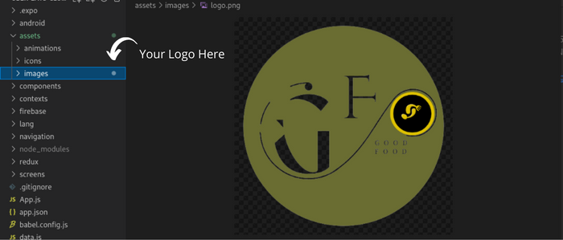

Getting Started
Launch the Good Food restaurant app with the same calm, step-by-step style as the customer app—no assumed prior knowledge.
1) Prerequisites
You will need a computer with Node.js, the Expo toolchain, and (for device testing) Android Studio or Xcode as described in the shared environment guide. If any term is new to you, start with the linked sections—they are written for first-time setup.
my-backend project) before opening the restaurant app.
The mobile client only shows live data when the server answers on the URL you configure.
Install Node.js LTS and Expo / native tooling once for the suite: Environment setup → Node.js and Expo and native tooling. Allow location when prompted if you rely on map or GPS-based features.
2) Step-by-Step Installation
- Open a terminal.
- Go into the folder named
restaurant-app(the one that containspackage.json). - Run
npm installand wait until it finishes without errors. - Continue to the configuration section below before your first
npm start.
When installation succeeds, your machine has downloaded the libraries the project declares—nothing is “magic”, it is standard Node.js workflow.
cd restaurant-app
npm install3) Configuration & Personalization
Most settings live in one file at the root of the project. Think of it as the contract between the app and your server:
where to call the API, whether demo credentials are allowed, timeouts, and several product toggles.
(The customer app splits some of this into a config folder—same idea, different layout.)
API configuration
The critical value is the base URL of your API—the address your phone or emulator must reach, usually ending with /api
exactly as your backend expects. On a real phone, localhost refers to the phone itself, not your laptop; use your computer’s LAN IP instead.
# Prefer .env (see .env.example)
EXPO_PUBLIC_API_URL=http://YOUR_SERVER_IP:5000/api
EXPO_PUBLIC_DEMO_MODE=true
EXPO_PUBLIC_DEMO_EMAIL=demo@restaurant.com
EXPO_PUBLIC_DEMO_PASSWORD=password123
# config.js
APP_NAME: 'Good Food Pro',
APP_SUBTITLE: 'Restaurant',
VERSION: '1.0.0',
API_TIMEOUT: 10000
Login uses POST /auth/restaurant-login. During local development many teams start from http://localhost:5000/api on an emulator; switch to your network IP before testing on hardware.
More detail:
Environment setup → API reachability.
Demo mode
When demo mode is on, the login screen can offer sample credentials—ideal for showroom demos. Before production, turn it off and rely on real accounts only.
Languages (English / French)
Adding or adjusting languages is documented once for every mobile app: Environment setup → Languages (i18n).
Visual customization
Brand colours and shared visual tokens are grouped in the project’s global theme file so designers can iterate without hunting through every screen.
Change app name
In restaurant app, update Expo app metadata and both in-app labels (APP_NAME and APP_SUBTITLE).
{
"expo": {
// Replace with your public app label
"name": "YOUR_RESTAURANT_APP_NAME",
"slug": "your-restaurant-app-slug",
"ios": {
"bundleIdentifier": "com.yourcompany.yourrestaurantapp"
},
"android": {
"package": "com.yourcompany.yourrestaurantapp"
}
}
}export const config = {
// Replace with the in-app labels you want
APP_NAME: 'YOUR_RESTAURANT_APP_NAME',
APP_SUBTITLE: 'YOUR_RESTAURANT_APP_SUBTITLE',
VERSION: '1.0.0'
}export const DEFAULT_APP_NAME = 'YOUR_RESTAURANT_APP_NAME'npm start again so nothing is cached incorrectly.
Logo update
Update only the logo image file in assets/images and keep the same file name.
Do not change paths or configuration when you only want a new logo.
- Open the app logo file in
assets/imagesinsiderestaurant-app. - Replace the image with your own logo.
- Keep exactly the same filename.
- Restart the app.

Default currency for the whole platform (admin + mobile) is documented here: Environment setup → App currency (change).
Firebase (push)
The repo ships a placeholder android/app/google-services.json. Replace it with your Firebase Android config (package com.goodfood.restaurant or your renamed package) before expecting push notifications.
4) API Connection
Once the app is running, every meaningful action—sign-in (POST /auth/restaurant-login), loading today’s orders, updating preparation status, editing dishes—goes through your REST API.
You do not configure each call by hand: the project already knows the endpoints; your job is to keep one correct base URL and a healthy backend.
If login fails, check three things in order: server running, URL reachable from the device, and a restaurant user that exists in the database (demo: demo@restaurant.com / password123).
5) Run the Project
expo-dev-client, Firebase messaging, etc.).
- Backend running;
.envfrom.env.example;npm installcompleted. - First time:
npm run androidornpm run ios. - Later:
npm start, then open the installed Good Food Pro Restaurant app. - Sign in and walk through Dashboard → Orders → Menu → settings.
cp .env.example .env
npm run android # first time: development build
npm start # later: Metro only